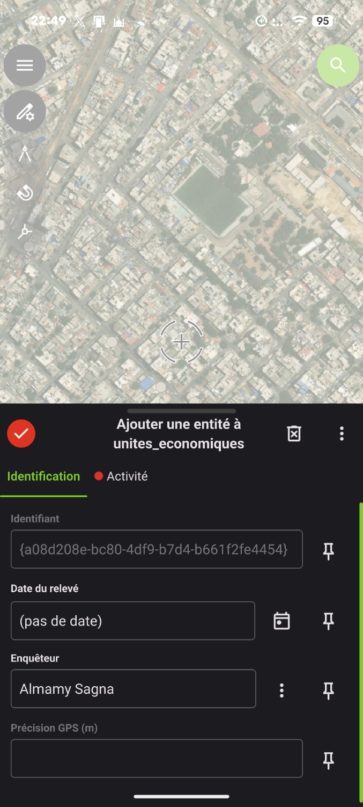
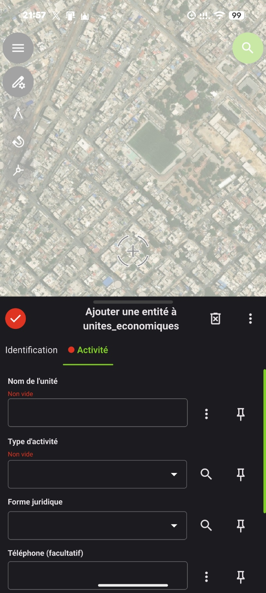
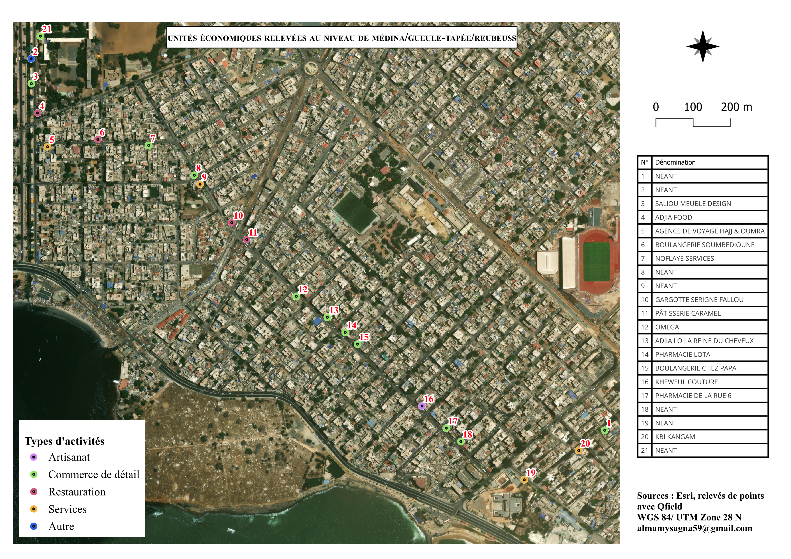

Unités économiques d’un quartier
De la collecte sur le terrain au contrôle qualité, puis à la carte
Contexte et objectif
Projet de collecte géoréférencée, réalisé au niveau de 3 quartiers dans le cadre de ma formation en cartographie à l'ANSD. L’objectif : relever les unités économiques avec un formulaire structuré, contrôler la qualité des données, puis produire une carte lisible des activités.
Collecte
J’ai conçu un formulaire dans QGIS avec QFieldSync, puis collecté sur le terrain avec QField sur un smartphone Android. Le formulaire compte dix champs : identifiant, date, enquêteur et précision GPS (remplis automatiquement), nom de l’unité, type d’activité, type de local et forme juridique (listes déroulantes), contact et observations.
Le nom et le type d’activité sont obligatoires : impossible de les oublier. Le fond de carte satellite était disponible hors ligne. J’ai relevé 21 unités économiques.


Contrôle qualité
- Sauvegarde. Copie du fichier brut avant tout traitement.
- Nettoyage. Suppression de 21 lignes vides, sans position ni donnée, créées par erreur.
- Cohérence. Aucun champ important vide et aucun doublon.
- Position. Vérification de chaque point sur l’image satellite, puis correction manuelle de 3 points légèrement décalés.
- Coordonnées. Calcul des colonnes longitude et latitude.
Résultat
Une carte des 21 unités classées par type d’activité, avec des numéros et un tableau de correspondance, une légende, une échelle et les sources.

Limites
Le GPS du téléphone était parfois éloigné des unités où je me trouvais : j’ai donc ajusté à la main la position de la plupart des points sur l’image satellite. La qualité de ces positions dépend de la netteté de l’image et de ma connaissance du terrain.
La précision GPS n’a été enregistrée que pour 6 points sur 21, de 0,5 à 38,8 m : elle ne mesure donc pas la qualité de l’ensemble. Je n’ai pas vérifié les positions avec un GPS plus précis. Les numéros de téléphone relevés ne sont pas publiés.
Outils
QGIS, QFieldSync, QField, Esri World Imagery.